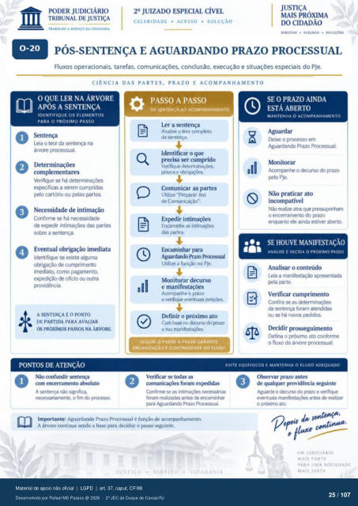

Transcrição automática em português, ainda não revisada. Confira grafia, prazos e termos jurídicos na imagem e no PDF antes de utilizar.
TRABALHO A SERVIÇO DA CIDADANIA
CELERIDADE • ACESSO • SOLUÇÃO
DIREITOS • DIALOGO •
PÓS-SENTENÇA E AGUARDANDO PRAZO PROCESSUAL
Fluxos operacionais. tarefas, comunicações. conclusão, execução e situações especiais do PJe.
CIÊNCIA DAS PARTES, PRAZO E ACOMPANHAMENTO
O QUE LER NA ÁRVORE
APÓS A SENTENÇA
IDENTIFIQUE OS ELEMENTOS
PARA O PRÓXIMO PASSO
O Sentença Leia o ter da sentença na
árvore rm:essual. complementares
Verifique se há eqEificas a serem curnpridas
pelo cartório ou r»las partes. O
Necessidade de intimação Confirme há necessidade
de das sobre a sentença.
o Eventual obrigação imediata
Identifique se existe alguma de cumprimento
imediato. corno pagamento, oficio ou outra
A SENTENÇA É O PONTO
DE PARTIDA PARA AVALIAR
OS PASSOS NA ÁRVORE.
PONTOS DE ATENÇÃO
O Não confundir sentença
com encerramento absoluto A Sentença não significa.
all
PASSO A PASSO
DA SENTENÇA AO ACOMPANHAMENTO
Ler a sentença Analise o teor completo
da sentença. Identificar o que
precisa ser cumprido e obrigaçüs.
Comunicar as partes Utilize -Preparar Ato
de Comun icaçào-. Expdir intimaçüs
Encaminhe as das partes.
Encaminhar para Aguardando Prazo Prtxessual
Utilize a funçáo no PJe. Monitorar decurso
Acompanhe o prazo e verifique eventuais
Definir o próximo ato no decurso do vrazo
e nas o
SEGUIR O PASSO A PASSO GARANTE
ORGANIZAÇÃO F CONTINUIDADE DO FLUXO
SE O PRAZO AINDA
ESTÁ ABERTO
MANTENHA O ACOMPANHAMENTO
[kixe o prcxesso em Aguardando Prazo Prcxessual.
Monitorar Acompanhe o prazo
PJe. Não praticar ato
Não realize atos que pressumtwn 0 do prazo
enquanto ele ainda estiver at»rto.
SE HOUVE MANIFESTAÇÃO
ANALISE E DECIDA O PRÓXIMO PASSO
Analisar o conteúdo Leia a apresentada
fp-la parte. Verificar cumprimento
Confira se as da sentença foram atendidas
ou se há novos IHiidos. Decidir prosseguimento
[kfina o próximo ato conforme o fluxo da árvore prcx:essual.
EVITE EQUiVOCOS E MANTENHA O FLUXO ADEQUADO
Verificar se tcxias as prazo antes
O foram ex1Rdidas
de qualquer providência Cülfirme as n«essárias
foram realizadas de encaminhar para Aguardando Prazo Prcx:essual.
Imprtante: Aguardando Prazo Prcx•essual é função de acompanhamento. A árvore continua sendo a base para decidiir o passo seguinte.
Aguarde o decurw do prazo e eventuais antes realizar
0 próximo ato.
UM JUDICIÁRIO
MAIS FORTE
PARA UMA SOCIEDADE
MAIS JUSTA
Ver também o infográfico original (página 25)
